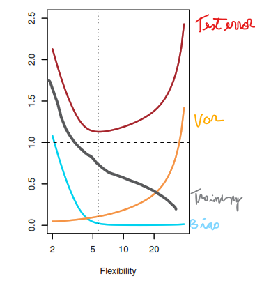
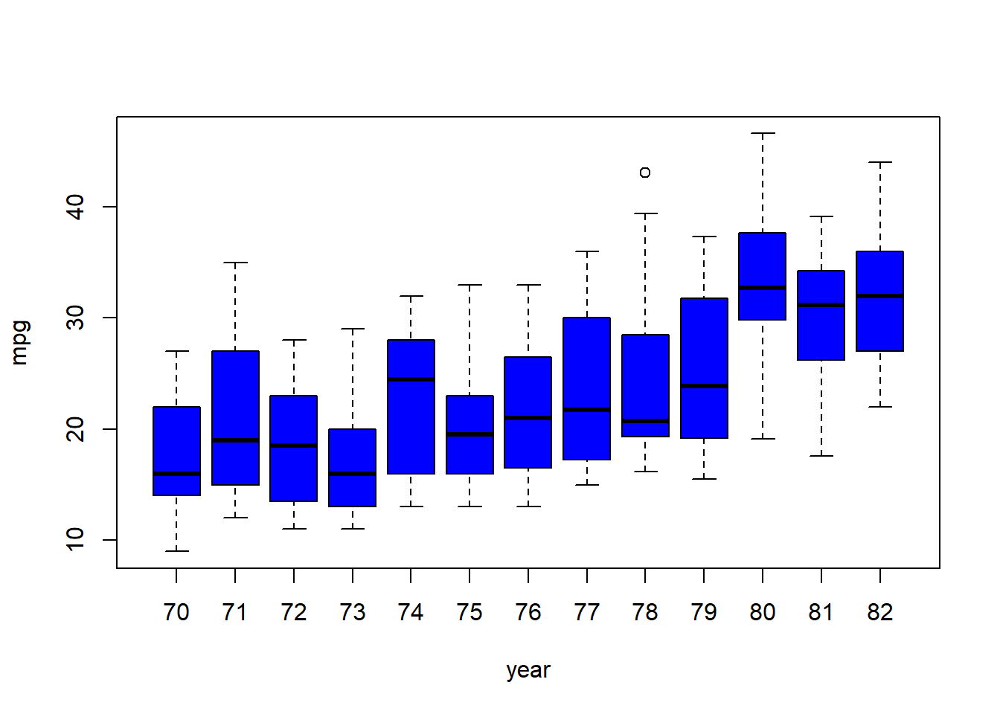
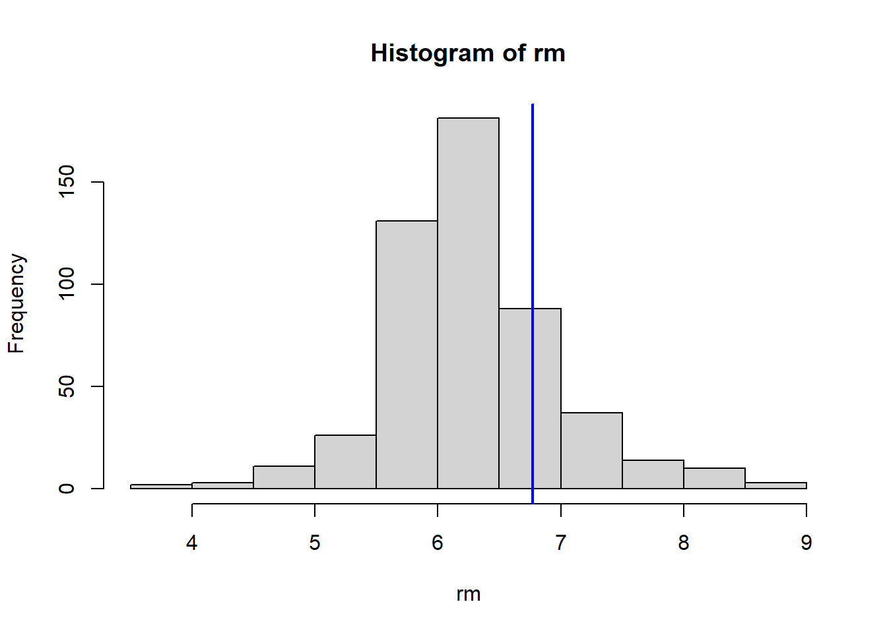
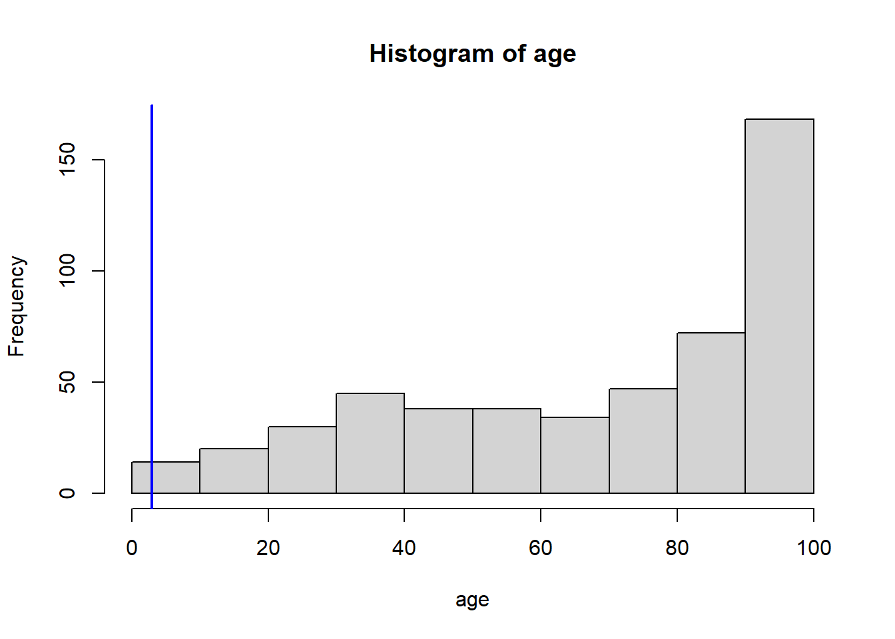
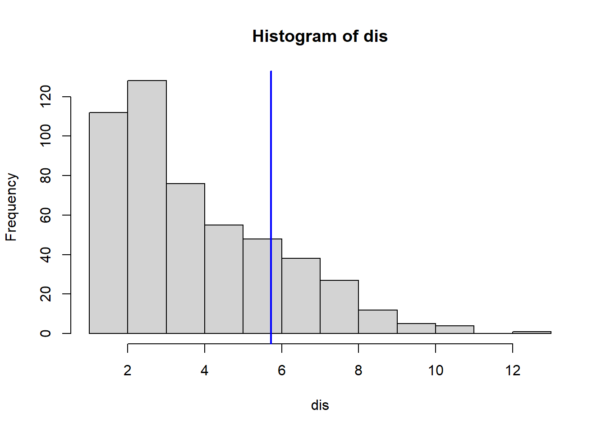

For each of parts (a) through (d), indicate whether we would generally expect the performance of a flexible statistical learning method to be better or worse than an inflexible method. Justify your answer.
The sample size n is extremely large, and the number of predictors p is small.
Better, flexible models reduce bias and quit the variance low when having a large n.
The number of predictors p is extremely large, and the number of observations n is small.
Worse, a flexible model could increase its variance very high when having small n.
The relationship between the predictors and response is highly non-linear.
Better, a lineal model would have a very high bias in this case.
The variance of the error terms, i.e. σ2 = Var(ϵ), is extremely high.
Worse, a flexible model would over-fit trying to follow the irreducible error.
Explain whether each scenario is a classification or regression problem, and indicate whether we are most interested in inference or prediction. Finally, provide n and p.
We collect a set of data on the top 500 firms in the US. For each firm we record profit, number of employees, industry and the CEO salary. We are interested in understanding which factors affect CEO salary.
Regression, inference, 500, 4
We are considering launching a new product and wish to know whether it will be a success or a failure. We collect data on 20 similar products that were previously launched. For each product we have recorded whether it was a success or failure, price charged for the product, marketing budget, competition price, and ten other variables.
Classification, prediction, 20, 14
We are interested in predicting the % change in the USD/Euro exchange rate in relation to the weekly changes in the world stock markets. Hence we collect weekly data for all of 2012. For each week we record the % change in the USD/Euro, the % change in the US market, the % change in the British market, and the % change in the German market.
Regression, prediction, 52, 4
We now revisit the bias-variance decomposition.
Provide a sketch of typical (squared) bias, variance, training error, test error, and Bayes (or irreducible) error curves, on a single plot, as we go from less flexible statistical learning methods towards more flexible approaches. The x-axis should represent the amount of flexibility in the method, and the y-axis should represent the values for each curve. There should be five curves. Make sure to label each one.

Explain why each of the five curves has the shape displayed in part (a).
In the example f isn’t lineal, so the the test error lower as we add flexibility until the point the models starts to overfit. The training error always goes down as we increase the flexibility. As we make the model more flexible variance always increase as the model is more likely to change as we change the training data and the bias always goes down as a more flexible model has fewer assumptions. The Bayes error is the irreducible error we can not change it.
You will now think of some real-life applications for statistical learning.
Describe three real-life applications in which classification might be useful. Describe the response, as well as the predictors. Is the goal of each application inference or prediction? Explain your answer.
Goal
Response
Predictors
Inference
Customer Tower Churn (0 or 1)
Annual Rent, Tower Lat, Tower Log, Tower Type, Number of sites around 10 km, Population around 10 km, Average Annual Salary in the city, contract Rent increases, customer technology
Inference
Employee Churn (0 or 1)
Months in company, Salary, Number of positions, Major, Sex, Total Salary Change, Bono, Wellness Expend, Number of depends, Home location
Inference
Absent (0 or 1)
Salary, Rain?, Holiday?, Number of uniforms, distance from home to work place, Months in company, Neighborhood median Salary, number of depends, number of marriage, Work start, Work End, Free day
Describe three real-life applications in which regression might be useful. Describe the response, as well as the predictors. Is the goal of each application inference or prediction? Explain your answer.
Goal
Response
Predictors
Inference
Number of likes
Words, Has a video?, Has a picture?, Post time, hashtag used
Inference
Velocidad de picheo
Edad, Altura, Peso, Horas de corrida, Cantidad de sentadillas, cantidad de practicas por semana, Años practicando el deporte
Inference
Food Satisfaction level (0 to 10)
Country, City, Height, Weight, Salary (US $), Salt, Spacy Level, Sugar (gr), Meat Type, Cheese (gr), Cheese Type
Describe three real-life applications in which cluster analysis might be useful.
Goal
Predictors
Classify costumer to improve advertising
Words searched, products clicked, Explored image, Seconds spent on each product, start time, end time, customer location
Classify company towers to see patterns in customers
Tower Lat, Tower Log, Tower Type, Number of sites around 10 km, Population around 10 km, Average Annual Salary in the city, BTS?, start date, Height
Classify football players check which players have similar results
Number of passes on each game, Number of meters run on each game, Position Played, Number of goals, Number of stolen balls, total time played
What are the advantages and disadvantages of a very flexible (versus a less flexible) approach for regression or classification? Under what circumstances might a more flexible approach be preferred to a less flexible approach? When might a less flexible approach be preferred?
Flexible model advantages
They have the potential to accurately fit a wider range of possible shapes for f
Flexible model disadvantages
They do not reduce the problem of estimating f to a small number of parameters.
A very large number of observations is required in order to obtain an accurate estimate for f.
They are harder to interpret
It is preferred when we have a lot of data to train the model and the goal is to get accurate predictions rather than good interpretations.
A less flexible approach is preferred when we don’t have a lot data to train the model or when the main goal is to make inferences to understand business rules.
Describe the differences between a parametric and a non-parametric statistical learning approach. What are the advantages of a parametric approach to regression or classification (as opposed to a nonparametric approach)? What are its disadvantages?
Parametric
Non-parametric
Make an assumption about the functional form
Don’t make an assumption about the functional form, to accurately fit a wider range of possible shapes for \(f\)
Estimates a small number parameters based on training data
Estimates a large number parameters based on training data
Can be trained with few examples
Needs many examples to be trained
Smoothness level is fixed
Data analyst needs define a level of smoothness
Parametric model advantages
Reduce the problem of estimating f to a small number of parameters.
Can be trained with few examples.
They are easy to interpret.
Parametric model disadvantages
In many times \(f\) doesn’t have the assumed shape adding a lot of bias to the model.
The table below provides a training data set containing six observations, three predictors, and one qualitative response variable.
DF_07<-data.frame(X1 =c(0,2,0,0,-1,1), X2 =c(3,0,1,1,0,0), X3 =c(0,0,3,2,1,1), Y =c("Red","Red","Red","Green","Green","Red"))DF_07
X1 X2 X3 Y
1 0 3 0 Red
2 2 0 0 Red
3 0 1 3 Red
4 0 1 2 Green
5 -1 0 1 Green
6 1 0 1 Red
Suppose we wish to use this data set to make a prediction for Y when X1 = X2 = X3 = 0 using K-nearest neighbors.
Compute the Euclidean distance between each observation and the test point, X1 = X2 = X3 = 0.
# As (C - 0)^2 = C^2DF_07<-transform(DF_07, dist =sqrt(X1^2+X2^2+X3^2))
X1 X2 X3 Y dist
5 -1 0 1 Green 1.414214
6 1 0 1 Red 1.414214
2 2 0 0 Red 2.000000
4 0 1 2 Green 2.236068
1 0 3 0 Red 3.000000
3 0 1 3 Red 3.162278
In the is case, the point would be in the Bayes decision boundary as there are two points of different colors at the same distance.
What is our prediction with K = 3? Why?
In this case, the point would be a Red one as 2 of 3 of them are from that color.
If the Bayes decision boundary in this problem is highly nonlinear, then would we expect the best value for K to be large or small? Why?
As flexibility decrease as K gets bigger, for highly nonlinear Bayes decision boundary the best K value should be a small one.
Applied
This exercise relates to the College data set, which can be found in the file College.csv on the book website. It contains a number of variables for 777 different universities and colleges in the US
Before reading the data into R, it can be viewed in Excel or a text editor.
Use the read.csv() function to read the data into R. Call the loaded data college. Make sure that you have the directory set to the correct location for the data. You should notice that the first column is just the name of each university. We don’t really want R to treat this as data.
Create a new qualitative variable, called Elite, by binning the Top10perc variable. We are going to divide universities into two groups based on whether or not the proportion of students coming from the top 10 % of their high school classes exceeds 50 %.
Use the hist() function to produce some histograms with differing numbers of bins for a few of the quantitative variables. You may find the command par(mfrow = c(2, 2)) useful: it will divide the print window into four regions so that four plots can be made simultaneously. Modifying the arguments to this function will divide the screen in other ways.
As students have more resources like teaching, supervision, curriculum development, and pastoral support institutions tend to expend less on each student and quest less money from out state students.
We also can see that students from top 10 % of high school class tend to go to universities where most the professors have the highest academic level available for each field or the highest room and board costs
This exercise involves the Auto data set studied in the lab. Make sure that the missing values have been removed from the data.
Which of the predictors are quantitative, and which are qualitative?
Now remove the 10th through 85th observations. What is the range, mean, and standard deviation of each predictor in the subset of the data that remains?
Using the full data set, investigate the predictors graphically, using scatterplots or other tools of your choice. Create some plots highlighting the relationships among the predictors. Comment on your findings.
Cars with 4 or 5 cylinders are more efficient than others.
plot(factor(Auto$cylinders) ,Auto$mpg, xlab ="cylinders", ylab ="mpg", col =2)
Cars have improved their efficiency each year.
plot(factor(Auto$year) ,Auto$mpg, xlab ="year", ylab ="mpg", col ="blue")

Suppose that we wish to predict gas mileage (mpg) on the basis of the other variables. Do your plots suggest that any of the other variables might be useful in predicting mpg? Justify your answer.
Do any of the census tracts of Boston appear to have particularly high crime rates? Tax rates? Pupil-teacher ratios? Comment on the range of each predictor.
Which census tract of Boston has lowest median value of owner-occupied homes? What are the values of the other predictors for that census tract, and how do those values compare to the overall ranges for those predictors? Comment on your findings.
VarsToPlot<-names(Boston)|>setdiff("crim")for(variableinVarsToPlot){hist(Boston[[variable]], main =paste("Histogram of" , variable), xlab =variable)abline(v=MinOwnerOccupiedHomes[[variable]],col="blue",lwd=2)}



In this data set, how many of the census tracts average more than seven rooms per dwelling? More than eight rooms per dwelling? Comment on the census tracts that average more than eight rooms per dwelling.